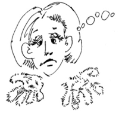
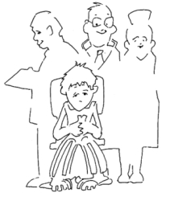

This page has usage examples for the following words:

allergy アレルギー
allergen アレルゲン（アレルギーを引き起こす物質）
blister 水ぶくれ（水庖） みずぶくれ（すいほう）
crusting かさぶた形成 かさぶたけいせい
dermatology 皮膚科 ひふか
dermatologist 皮膚科医 ひふかい
erythema 紅斑 こうはん
urticaria, hives 蕁麻疹 じんましん
weeping 滲出液が出る しんしゅつえきがでる
Both of my arms became itchy about a week ago, and little bumps appeared.
１週間くらい前に、両腕がかゆくなって、蕁麻疹のようなものが出ました。
いっしゅうかんくらいまえに、りょううでがかゆくなって、じんましんのようなものがでました。
The itching on my arms disappeared with time, but the back of my left hand is still red and bumpy.
腕のかゆみは自然に消えていましたが、左手の甲だけが赤くかぶれたようになっています。
うでのかゆみはしぜんにきえていましたが、ひだりてのこうだけがあかくかぶれたようになっています。
I may have scratched my hand during sleep. I don't remember if I did or not.
もしかしたら、眠っている間に痒くなってかいたのかもしれません。でも覚えていません。
もしかしたら、ねむっているあいだにかゆくなって かいたのかもしれません。でも おぼえていません。
Are you allergic to anything?
何かのアレルギーがありますか。
なにかのアレルギーがありますか。
I haven't thought about it too much, but I have had hives-like rashes-a few times.
調べたことがないのでわかりませんが、過去に何度か蕁麻疹が出たことはあります。
しらべたことがないのでわかりませんが、かこになんどかじんましんがでたことはあります。
You have eczema.
これはエグゼマですね。（日本語では主婦湿疹という病名です。）
これはエグゼマですね。（にほんごでは しゅふしっしんというびょうめいです。）
Is this contagious?
うつりませんか。
No, it is not contagious.
うつりません。
What is the difference between allergy and hives?
アレルギーと蕁麻疹や湿疹はどう違いますか。
アレルギーとじんましんやしっしんはどうちがいますか。

Itchiness woke me up one morning
I turned on the light to see what happened to my body and found small red rash all over the body. It was shocking. I was really worried. I couldn’t sleep and stayed awake all night. I couldn’t sit still until 9 o’clock when University Hospital started to see patients. I left home at 6 o’clock and sat for a while at the waiting room of the hospital. I was really depressed. Just around 9 o’clock, I was surprised to realize that these red rash began to disappear like the receding waves. Nurse called my name. I went into the examining room. “What’s wrong?" “I have red rash all over my body.” “Let’s see”“There is no rash anywhere.” “I truly had them.” “Nothing’s wrong with you.” “I may still have rash in the sole of my foot.” Several nurses and doctors gathered around me, smiling. I was embarrassed.
明け方、かゆさのために目を覚ましました。電気を付けて身体を点検してみると、赤い湿疹のような小さなブツブツが身体中にできていました。ドキっとしました。心配になって、その後、一睡もできませんでした。大学病院の始まる午前９時を持ちきれず、午前６時には家を出ました。待合室で、かなり落ち込んで、時間のたつのを待っていました。ところが、診察の始まる午前９時頃になって、だんだん赤いブツブツが、潮が引いていくように消えていくではありませんか！ 看護師さんに名前を呼ばれました。診察室に入りました。「どうしましたか？」「身体中に、赤いブツブツができています。」「どれどれ！」「どこにも何もないですよ。」「今まで、ちゃんとあったんです。」「なんともないよ！」「いや、足の付け根には、まだ残っているかもしれません。」看護婦さんや数人の医師が回りに集まってきて笑っています。何とも格好悪いことでした。
A conversation between a patient and a doctor about allergies and hives
Patient:
The other day, both of my arms got itchy, but I didn’t pay too much attention it. After a while, the skin on the back of my left hand turned red and looked as if had been poisoned. The symptoms have persisted over a week and appear to be worsening. Is it an allergic reaction to something?
両腕がかゆくなって、その後、あまり気に留めていませんでした。ところが、しばらくしてから、左手の甲の皮膚が、かぶれたように赤くなっているのに気がつきました。もう１週間くらい全然治らず、症状がひどくなっているような気がします。何かによるアレルギー反応でしょうか。
Doctor:
Allergic reaction, hives (urticaria) and eczema. These three are easier to comprehend if we think of them as being closely related to each other, in terms of cause (or physical predisposition), rather than skin symptoms and diagnosis, so we can discuss them separately.
These three have the same process of manifestation; when you contact or inhale chemical substances, erythema and ,blisters appear on the skin, Because of the itchy sensation, you scratch the skin, thereby inducing more ,blisters.
Urticaria, is defined in medical dictionaries as the sudden appearance of wheals with extreme itch, which disappear in 2 to 3 days or become chronic in some cases. Therefore, if you have a rash on your hands after using dish detergent for several days, the symptom does not indicate urticaria but contact dermatitis, or eczema. At any rate, you should consult a dermatologist.
皮膚のアレルギー反応、蕁麻疹（urticaria）、湿疹（eczema）の３者は、別々に論じるよりも、原因、（あるいは身体的素因）、皮膚の症状、皮膚病の診断において、密接に関連していると考えた方が理解しやすいでしょう。
何らかの原因で、例えば化学性物質に接触したり吸入したために、皮膚に紅斑や水庖が発現し、そう痒（かゆみ）のために皮膚を掻いていると水ぶくれになる、といった経路は、３者に共通します。
蕁麻疹は医学辞典には、「膨疹が突然皮膚面に発現し、極度の痒感を伴う状態で、一般に２〜３日間前後には消失するが、慢性の経過をとることもある」と出ていますので、台所洗剤を何回も使用していてだんだん皮膚がかぶれてきたといった症状は蕁麻疹とは言えず、接触性湿疹と思われます。いずれにしても、皮膚科医にご相談なさることをおすすめします。
[a01]
| © 1995-2013 NACOS International Institute. All Rights Reserved. |